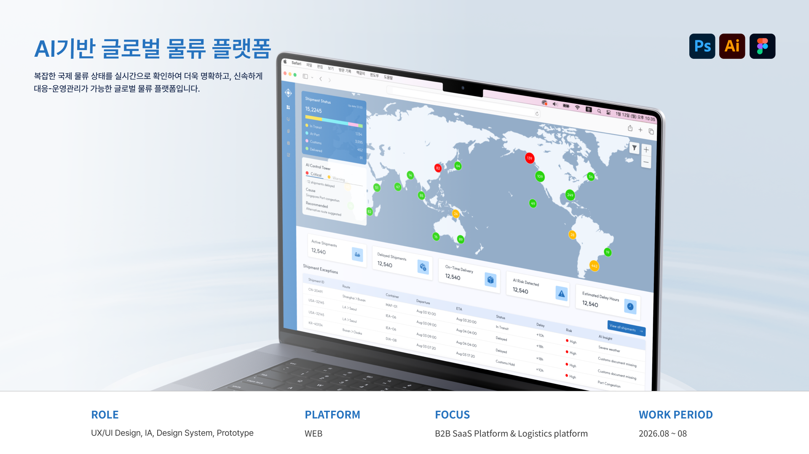

해외 물류 컨트롤타워 플랫폼

프로젝트 개요
프로젝트 목표
국제 물류 도메인에 대한 디자인 경험을 확장하고, 국제화 시대를 맞이하면서 늘어난 물류량을 정보를 한 곳에 모아 확인하여 운영자가 빠르게 대응할 수 있도록 실시간 물류 관리 서비스 제공을 목표로 한다.
디자인 목표
전체 물류, 화물 선박을 단계적으로 탐색하고 리스크와 예상외 상황을 상황을 사용자가 바로 확인 할 수 있도록 시각적인 우위를 두어 신속하게 대응할 수 있는 기능을 제공한다.
프로젝트 타입
물류상황을 투명하게 제공하고 데이터 기반 정보 분석하여 직관적인 정보를 제공하여 해상 업무를 체계적으로 관리할 수 있도록 제작되었습니다.
프로젝트 유형
B2B SaaS Platform, End-to-End Product Design
제작 방향


동일한 정보를 동일한 방식으로 보여주는 것이 아닌 정보의 성격에 따라 표현 방법과 시각적 위계를 달리하여 사용자가 원하는 정보를 빠르게 확인하고 이해할 수 있도록 하였습니다.
핵심 화면

AI를 단순한 기능으로 추가하는 것이 아닌 각 화면에서 사용자의 판단을 어떻게 지원할 수 있을지 고민했습니다. Dashboard에서는 전체 상황을 빠르게 파악, Monitoring에서는 운송 현황과 예외 선박을 단독으로 확인하여 원인과 대응 방향을 확인, Warehouse와 Customs에서는 현재 물류와 진행 상태를 빠르게 확인, Reports에서는 지금까지의 현황을 분석하고 요약하여 다음 행동으로 이어질 수 있도록 UI/UX를 설계하였습니다.
상세 프로젝트 보기
*AI학습·무단 전재·복제 및 외부 배포를 금합니다.


© 2026 Leesujin. All rights reserved.